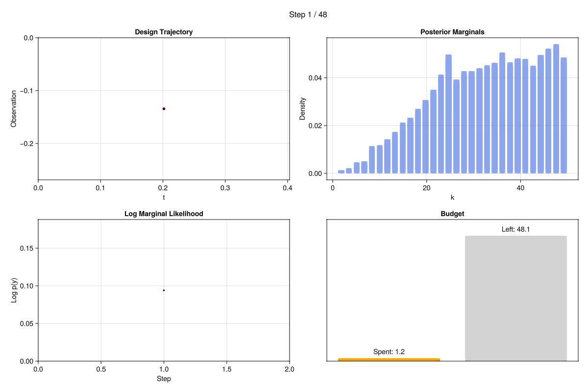
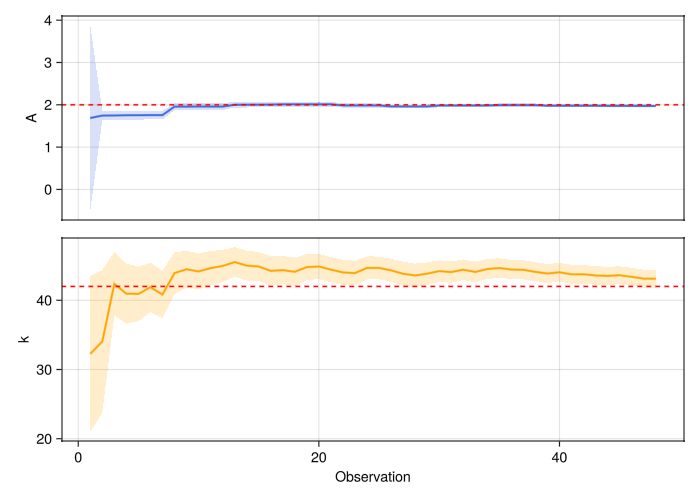
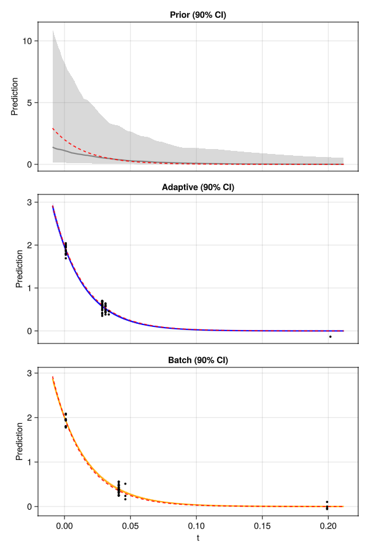
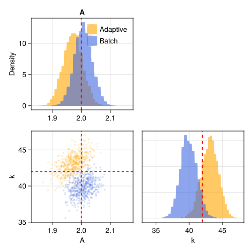
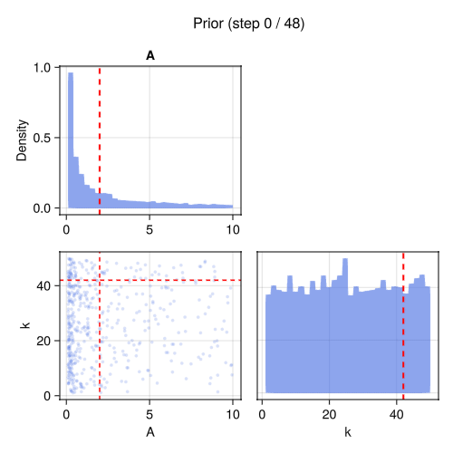

Adaptive Design
In an adaptive experiment, each measurement is chosen based on what you've learned so far. The algorithm loops: design → acquire → update posterior → repeat. This can outperform batch design when the optimal measurement locations depend on the (unknown) parameter values.
The model
The same exponential decay from the Batch Design example:
\[y = A \exp(-k \, t) + \varepsilon, \qquad \varepsilon \sim \mathcal{N}(0, \sigma^2)\]
using OptimalDesign
using CairoMakie
using ComponentArrays
using Distributions
function model(θ, x)
θ.A * exp(-θ.k * x.t)
end
θ_true = ComponentArray(A = 2.0, k = 42.0)
σ = 0.1
acquire(x) = model(θ_true, x) + σ * randn()Defining the design problem
This time we add a per-measurement cost — short measurements are cheap (cost ≈ 1) and long measurements are more expensive (cost up to 1.5). The experiment will be controlled by a total budget rather than a fixed number of measurements:
prob = DesignProblem(
model,
parameters = (A = LogUniform(0.1, 10), k = Uniform(1, 50)),
transformation = select(:k),
sigma = Returns(σ),
cost = x -> x.t + 1,
)
candidates = candidate_grid(t = range(0.001, 0.5, length = 200))Running the adaptive experiment
run_adaptive takes a budget and loops until it is exhausted. At each step it calls design internally using the current posterior, acquires a measurement, and updates. With n_per_step = 1 the experiment is fully sequential — each observation informs the next.
prior = Particles(prob, 5000)
result = run_adaptive(
prob, candidates, prior, acquire;
budget = 50.0,
)[ Info: Adaptive experiment: budget=50.0, 200 candidates, 2 parameters (A, k)
[ Info: Step 10/48: spent=10.42/50.0, ESS=2567.0, posterior=(A=1.959, k=44.164)
[ Info: Step 20/48: spent=20.65/50.0, ESS=4570.0, posterior=(A=2.012, k=44.881)
[ Info: Step 30/49: spent=30.86/50.0, ESS=4050.0, posterior=(A=1.983, k=44.212)
[ Info: Step 40/49: spent=41.1/50.0, ESS=3664.0, posterior=(A=1.978, k=44.044)
[ Info: Experiment complete: 48 observations, cost=49.28/50.0, ESS=4748.0
[ Info: Final posterior: A=1.971, k=43.114A live dashboard is displayed of the acquisition process and evolution of parameter estimates. This can also be saved as a gif or mp4 following acquisition:
record_dashboard(result, prob; filename="dashboard.gif")[ Info: Recording dashboard animation: 48 frames → dashboard.gif (10 fps)
[ Info: Dashboard animation saved: dashboard.gif
Batch comparison
For a fair comparison, we design a batch experiment with the same budget. Since both use cost-aware design, the difference is purely whether the design adapts to incoming data:
result_batch = run_batch(prob, candidates, prior, acquire;
budget = 50.0)[ Info: Running exchange algorithm for batch design...
[ Info: Exchange: K=200 candidates, q=1.0, 5000 fixed particles, max_iter=100
[ Info: Init: 14 support points
[ Info: Phase 2: refining weights on 4 support points
[ Info: Exchange complete: 5 support points, fw_gap=0.0088Convergence
plot_convergence shows how the parameter estimates evolve as observations accumulate. The shaded band is ± 1 posterior standard deviation; the dashed line marks the true value:
plot_convergence(result; truth = θ_true)
Credible bands
plot_credible_bands(prob, result, result_batch;
labels = ["Adaptive", "Batch"], truth = θ_true)
Corner plot — adaptive vs batch
plot_corner(result, result_batch;
labels = ["Adaptive", "Batch"], truth = θ_true)
Posterior evolution
With record_posterior = true, you can create an animation of the posterior evolving as observations arrive:
record_corner_animation(result.log, "posterior_evolution.gif";
truth = θ_true, framerate = 3)[ Info: Recording corner animation: 25 frames → posterior_evolution.gif
[ Info: Animation saved: posterior_evolution.gif